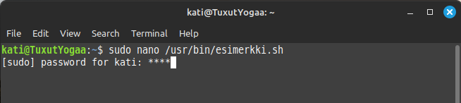
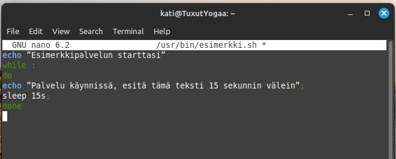

Skriptin luonti ja tallennus:
nano /usr/bin/esimerkki.sh
Kopioi ja liitä seuraava koodi Nano-ohjelmaan:
echo ”Esimerkkipalvelun starttasi”
while :
do
echo ”Palvelu käynnissä, esitä tämä teksti 15 sekunnin välein”;
sleep 15s;
done
Kuvakaappaus editorista:
